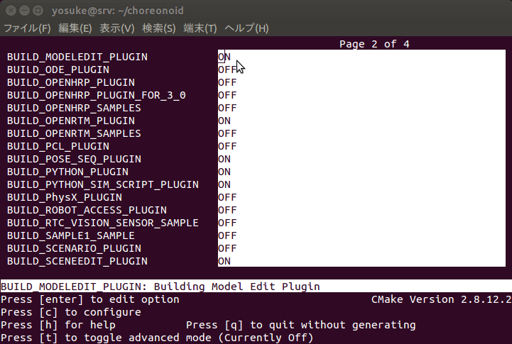

インストール¶
ソースコードからのインストール¶
githubから最新のソースコードをクローンします。
$ git clone https://github.com/fkanehiro/choreonoid-editor.git
まず、依存するライブラリをインストールします。
$ cd choreonoid-editor
$ ./misc/script/install-requisites-ubuntu-14.04.sh
次にcmakeかccmakeを実行します。
cmakeを使う場合、コマンドラインで以下のオプションを指定してください。
$ cmake -DBUILD_MODELEDIT_PLUGIN=ON .
ccmakeを使う場合、 “BUILD_MODELEDIT_PLUGIN” 項目を “ON” に設定してください。
以下のコマンドでコンパイルして実行してください。
$ make
$ ./bin/choreonoid